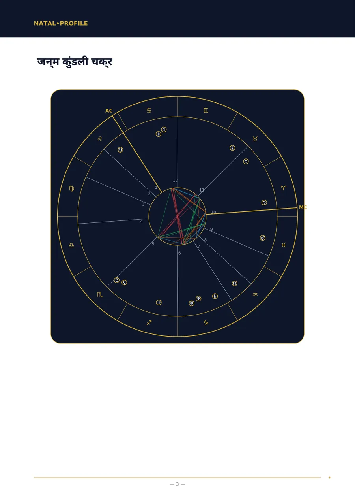
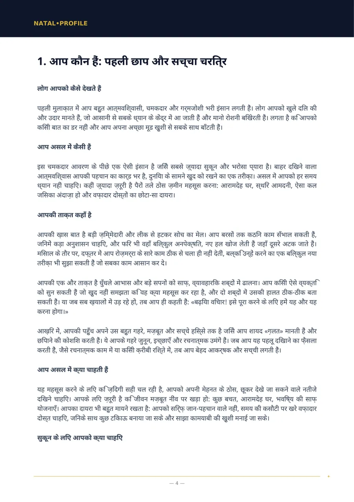
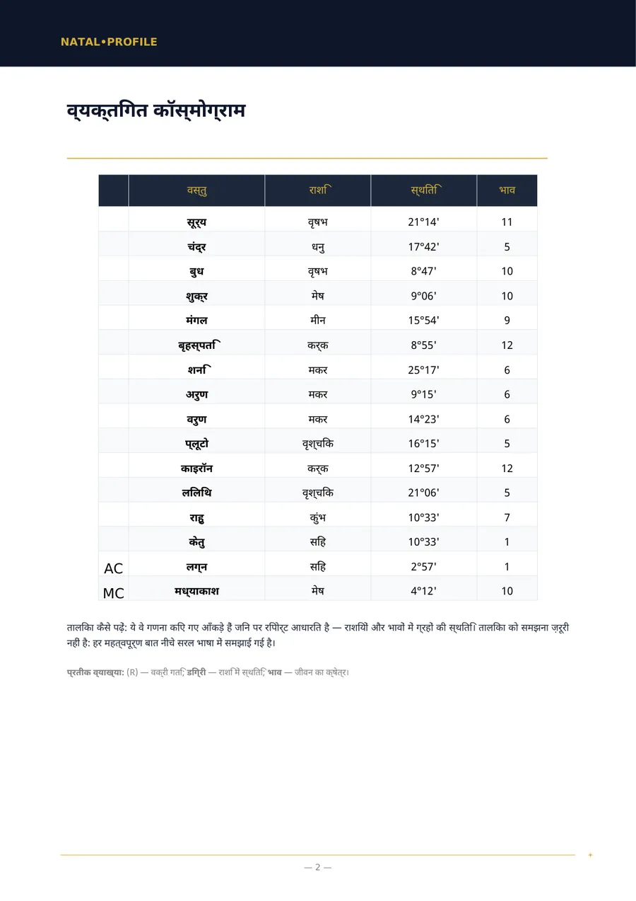
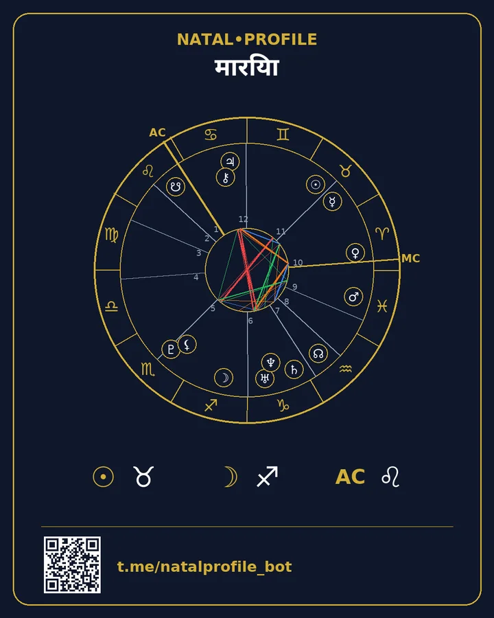

आपकी जन्म कुंडली, सरल भाषा में
जन्म की तारीख़, समय और शहर भरें और कुछ ही मिनटों में PDF पाएँ: आपका स्वभाव कैसा है, आपकी ताक़त कहाँ है, क्या रोकता है और शुरुआत कहाँ से करें। न कठिन शब्द, न राशि के बारे में घिसी-पिटी बातें।
- Swiss Ephemeris से गणना
- 15 भाषाएँ
- कोई सब्सक्रिप्शन नहीं
दो त्वरित गणनाएँ
ये आपके ब्राउज़र में ही होती हैं। कुछ भी भेजा या सहेजा नहीं जाता।
सूर्य राशि और तत्व
पूरी कुंडली का विश्लेषण →सूर्य राशि कुंडली के दर्जनों बिंदुओं में से एक है। रिपोर्ट में सभी ग्रह, भाव और उनके आपसी संबंध देखे जाते हैं।
जीवन पथ अंक
अंक ज्योतिष विश्लेषण पाएँ →गणना वैसी ही है जैसी बॉट की रिपोर्ट में: तारीख़ के अंकों को जोड़ते हैं जब तक एक अंक न बचे। नाम के अंक बॉट में निकाले जाते हैं।
रिपोर्ट कैसी दिखती है
«जन्म कुंडली» रिपोर्ट के असली पन्ने। यह एक नमूना है: जन्म विवरण काल्पनिक है।




«आपकी गहरी ज़िम्मेदारी और भरोसेमंद स्वभाव आपका आधार है, पर जीवन का असली आनंद तब खुलता है जब आप ख़ुद को थोड़ा «अपूर्ण» और आज़ाद होने देते हैं।»
आप क्या मँगा सकते हैं
रिपोर्ट के पन्नों पर दी गई अध्याय-सूचियाँ वही हैं जो PDF में मिलती हैं। कीमतें Telegram Stars में हैं।
जन्म कुंडली (पूरा विश्लेषण)
जन्म की तारीख़, समय और स्थान से आपके स्वभाव का पूरा विश्लेषण।
जन्म कुंडली (बेसिक विश्लेषण)
जन्म समय पता न होने पर स्वभाव का विश्लेषण।
अनुकूलता विश्लेषण (पूरी समीक्षा)
दो लोग: आपको क्या खींच लाया, कहाँ मतभेद है और आप एक-दूसरे को क्या देते हैं।
अनुकूलता विश्लेषण (बेसिक समीक्षा)
जन्म समय पता न होने पर स्वभावों की अनुकूलता।
करियर और फाइनेंस एनालिसिस
काम में आपकी ताक़त क्या है, कौन-से पेशे आपके अनुकूल हैं और पैसे से आपका रिश्ता कैसा है।
बाल कुंडली — आपके बच्चे को समझने की गाइड
आपके बच्चे को सुकून के लिए क्या चाहिए और उसे किस बात में सहारा दें।
वार्षिक पूर्वानुमान (सोलर रिटर्न)
जन्मदिन से जन्मदिन तक आपके साल के विषय और तारीख़ों वाली अवधियाँ।
आज का राशिफल
चंद्रमा के योगों के सटीक समय के आधार पर आज का पूर्वानुमान।
नाम और जन्मतिथि से अंक ज्योतिष
पाइथागोरस पद्धति से आपके नाम और जन्म तिथि के अंक।
वैदिक कुंडली (ज्योतिष)
वैदिक कुंडली: लग्न, ग्रह, नक्षत्र और दशा काल।
यह कैसे काम करता है
पहले संदेश से तैयार फ़ाइल तक कुछ ही मिनट।
बॉट खोलें
Telegram में, बिना पंजीकरण और पासवर्ड के।
विवरण भरें
नाम, जन्म की तारीख़, समय और शहर। शहर सूची से चुना जाता है।
PDF पाएँ
आम तौर पर 5 मिनट के भीतर। फ़ाइल सीधे चैट में आती है।
कार्ड सहेजें
आपकी कुंडली और रिपोर्ट के मुख्य वाक्य वाली तस्वीर।
भुगतान
रिपोर्ट का भुगतान बॉट के साथ चैट में ही Telegram Stars से होता है। कोई सब्सक्रिप्शन नहीं — हर रिपोर्ट के लिए एक बार भुगतान।
आपकी कुंडली के साथ जन्म विश्लेषण का पहला अध्याय और दैनिक राशिफल — दोनों एक-एक बार बिना भुगतान।
आप रिपोर्ट का भुगतान करते हैं और एक लिंक पाते हैं। आपका दोस्त उसे खोलकर अपना विवरण भरता है और विश्लेषण पाता है।
बॉट में «भुगतान नहीं हो रहा?» सहायता है, और सपोर्ट Telegram पर जवाब देता है।
आपका डेटा
जन्म की तारीख़, समय और स्थान केवल कुंडली की गणना और रिपोर्ट लिखने के लिए चाहिए।
PDF भेजे जाने के बाद नाम, जन्म की तारीख़, समय और स्थान मिटा दिए जाते हैं।
PDF सर्वर पर 24 घंटे रहती है, फिर हटा दी जाती है। आपके पास वह चैट में रहती है।
कैलकुलेटर आपके ब्राउज़र में चलते हैं। साइट पर न फ़ॉर्म हैं, न पंजीकरण, न ट्रैकर।
अक्सर पूछे जाने वाले प्रश्न
मुझे अपना जन्म समय नहीं पता। क्या करूँ?
«बिना जन्म समय» वाली रिपोर्ट चुनें। उसमें भाव और लग्न नहीं होंगे, पर स्वभाव, भावनाएँ, सोचने का तरीक़ा और रिश्ते उनके बिना भी बताए जाते हैं।
यह राशि वाले राशिफल से कैसे अलग है?
राशि वाला राशिफल केवल सूर्य की स्थिति लेता है। रिपोर्ट आपकी जन्म तिथि, समय और स्थान के लिए सभी ग्रहों, भावों और उनके संबंधों की गणना करती है।
रिपोर्ट का पाठ कौन लिखता है?
ग्रहों की स्थिति की गणना सॉफ़्टवेयर Swiss Ephemeris से करता है। फिर एक भाषा मॉडल उन्हीं गणनाओं के आधार पर तय नियमों से पाठ लिखता है।
रिपोर्ट किन भाषाओं में मिलती है?
पंद्रह में: अंग्रेज़ी, रूसी, स्पेनिश, हिंदी, पुर्तगाली, वियतनामी, तुर्की, इंडोनेशियाई, उज़्बेक, कज़ाख, फ़्रेंच, जर्मन, इतालवी, अरबी और फ़ारसी।
क्या पैसे वापस मिल सकते हैं?
रिपोर्ट ख़ास आपके लिए बनती है, इसलिए PDF मिलने के बाद भुगतान वापस नहीं होता। अगर हमारी ग़लती से रिपोर्ट नहीं बनी, तो पूरी राशि लौटाई जाती है।
मुफ़्त अध्याय से शुरू करें
हम आपकी कुंडली की गणना करके असली विश्लेषण का पहला अध्याय भेजते हैं। पसंद आए तो पूरा ले लें।